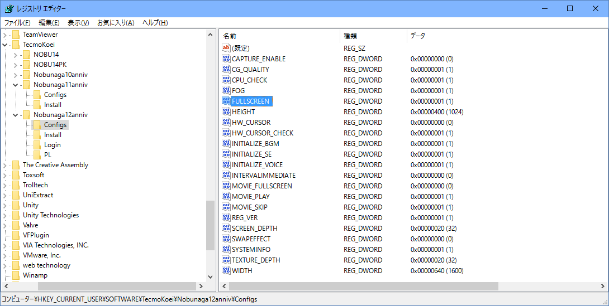
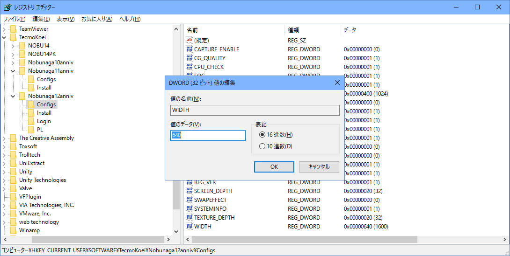

この問題は、Windows8 あたりから発生しているものです。
Direct X のバージョンが新しいと発生します。
革新をWindowsモードで起動することでこのちらつきを解消することが出来ます。
レジストリエディタ(regedit)で
HEKY_CURRENT_USER\Software\KOEI\Nobunaga12PK\Config\FULLSCREEN
の値を0に設定し、ウィンドウモードでプレイしてください。
30周年記念版の場合は、場所が異なります。
HEKY_CURRENT_USER\Software\TecmoKoei\Nobunaga12anniv\Config\FULLSCREEN
という項目の値を0に設定し、ウィンドウモードでプレイしてください。

又、同様に、WIDTHの項目を640(=10進数にすると1600のこと)などにすると、画面が広く使えます。
